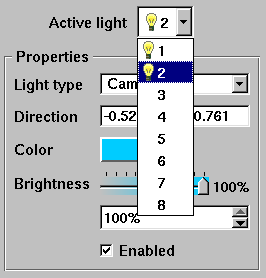

Clicking the radio buttons for Edit or Preview switches the Lighting Window into the desired mode. When the Lighting Window is in edit mode, one light source at a time is shown in the lighting panel and the lights properties can be set by moving the light interactively or by settings its properties by using the controls in the Properties panel. When the Lighting Window is in preview mode, all lights are shown in the lighting panel and none of them can be modified.
|  |
| Figure 25 |